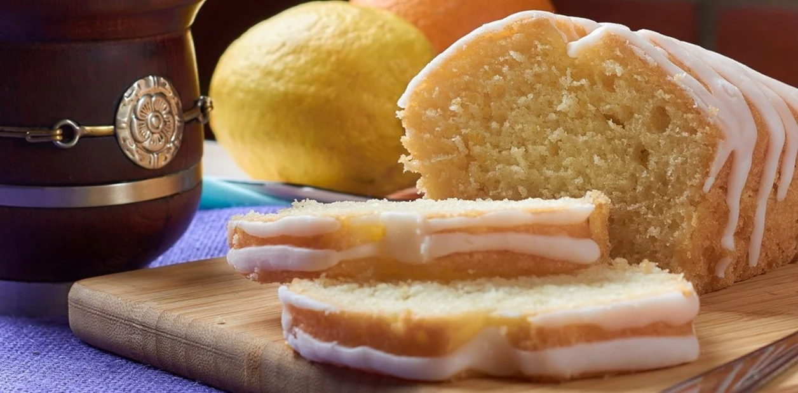

| Cantidad | Ingredientes |
|---|---|
| 100 g | Manteca |
| 200 g | Azucar |
| 200 g | Harina |
| 1 pizca | Sal |
| 2 | Huevos |
| 125cc | Leche |
| 2 | Ralladura de limones |
Procedimiento
- Batir la manteca blanda con el azúcar.
- Agregar los huevos de a uno y batir.
- Agregar los huevos de a uno y batir.
- Sumar la ralladura. Alternar leche y harina. Integrar.
- Poner la preparación en una budinera enmantecada grande.
- Llevar a horno precalentado 180°, por 45 minutos aproximadamente, hasta que al introducir un cuchillo salga seco.
- Por otro lado, poner el azúcar en una sartén con el jugo de limón. Dejarlo hervir, pero poco tiempo, sólo hasta derretir bien el azúcar, serán unos 4 o 5 minutos.
- Pinchar en caliente el budín y volcar el almíbar sobre él.
- Dejar enfriar un poco y desmoldar.
- Si se desea, bañar el budín con glasé.